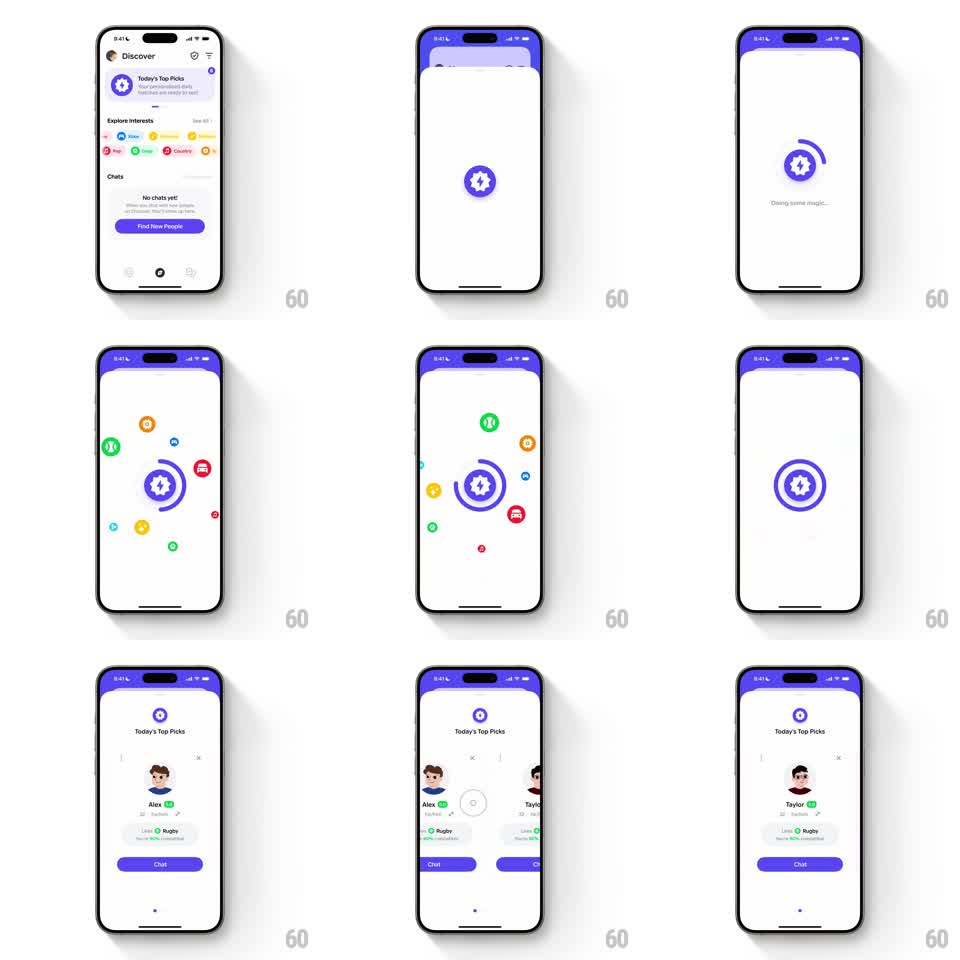

Media
Frame-by-frame

Rebuild this animation 1:1: Honk's Today's Top Picks loader - a sheet rises with a pulsing star badge, interest icons orbit it in widening circles, then the sheet resolves into a swipeable stack of profile cards.

Rebuild this animation 1:1: Honk's Today's Top Picks loader - a sheet rises with a pulsing star badge, interest icons orbit it in widening circles, then the sheet resolves into a swipeable stack of profile cards.
## Integration
Integration: stack-agnostic spec - springs given as stiffness/damping, timed motions as duration + curve; map every value to your framework and animation library of choice.
## Scene
Discover screen ("Today's Top Picks", Explore Interests chips, "Find New People" button) -> a white sheet with a purple header rises: a purple circle-star badge at center with "Doing some magic..." text. Interest icons (tennis ball, car, music note, basketball, palette) orbit the badge. Then the sheet resolves to the "Today's Top Picks" card stack: profile cards (Alex, 17, Rugby, "Likes You", purple Chat button) swiping sideways to the next pick (Taylor).
## Motion spec
Pattern: orbiting-icon loader resolving into a card stack.
- Sheet slides up (spring ~300/24, 350ms); the badge scales in (0.6 -> 1, spring ~340/15) with a rotating arc segment sweeping its ring (1.2s per revolution).
- Icons spawn one by one (scale 0 -> 1, 80ms stagger) and orbit the badge on 2-3 concentric circular paths (radii ~70/110/150pt, angular speeds 0.8-1.4 rad/s, alternating directions), each icon gently counter-rotating to stay upright.
- Orbit runs ~2.5s, then icons spiral inward into the badge (radius -> 0 over 400ms, accelerating) and the badge pulses (scale 1 -> 1.15 -> 1, 200ms).
- The loader crossfades to the picks stack (300ms): the top profile card scales up from 0.95 with a slight tilt settling to 0 (spring ~280/20).
- Swiping the card: it follows the finger with rotation proportional to drag X (+-10deg), flings off-screen on release past threshold (velocity-based), the next card scaling up from 0.95 -> 1 underneath (spring ~300/20).
## Calibration
- Icons stay upright while orbiting - position rotates, glyph does not.
- The inward spiral is the transition cue: loader to results in one continuous move.
## Reduced motion
Icons fade in around the badge (static ring), then crossfade to the card stack.
## Don't miss
- The purple header and star badge carry brand color through every phase.
- Card stack depth: exactly one next card visible behind the top card.